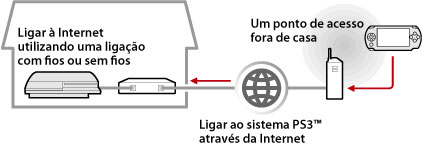
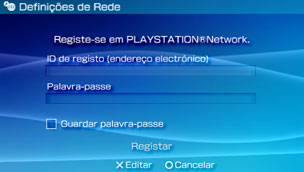

Rede > Utilizar a reprodução remota (através da Internet)
Utilizar a reprodução remota (através da Internet)
Para utilizar esta funcionalidade, poderá ser necessário actualizar o software de sistema PS3™ e do sistema PSP™.
Utilizando o sistema PSP™ e um ponto de acesso sem fios (como, por exemplo, um serviço (LAN sem fios) hotspot sem fios disponível comercialmente), pode estabelecer ligação com o sistema PS3™ localizado em sua casa através da Internet. Para utilizar a reprodução remota fora de casa, o sistema PS3™ deve ser definido para o modo de espera de ligação de reprodução remota.

Nota
O método para utilizar um serviço (LAN sem fios) hotspot sem fios disponível comercialmente e as tarifas de utilização variam dependendo do fornecedor do serviço. Para mais informações, contacte o fornecedor do serviço.
Preparar para a reprodução remota (1) (sistemas PS3™ e PSP™)
Para utilizar a reprodução remota pela primeira vez, o utilizador deve registar (em par) o sistema PSP™ com o sistema PS3™. Registe o sistema em  (Definições) >
(Definições) >  (Definições de Reprodução Remota) > [Registar o Dispositivo].
(Definições de Reprodução Remota) > [Registar o Dispositivo].
Preparar para a reprodução remota (2) (sistema PS3™)
Defina o sistema PS3™ para entrar no modo de espera. Defina [Início remoto] para [Ligado] para que possa ligar o sistema PS3™ a partir do sistema PSP™.
1. |
Execute os passos seguintes no sistema PS3™:
|
|---|---|
2. |
Desligar o sistema PS3™. |
 (Utilizadores).
(Utilizadores). (Desligue) para desligar o sistema e colocá-lo no modo de espera. Certifique-se de que o indicador de alimentação está aceso a vermelho.
(Desligue) para desligar o sistema e colocá-lo no modo de espera. Certifique-se de que o indicador de alimentação está aceso a vermelho.Nota
Para obter mais informações sobre as definições descritas no passo 1, consulte (Definições) > (Definições de Reprodução Remota) > [Início remoto] neste manual.
Preparar para a reprodução remota (3) (sistema PSP™)
Crie uma ligação de rede para ligar o sistema PSP™ a um ponto de acesso. Para utilizar a reprodução remota através da Internet, pode utilizar um serviço (LAN sem fios) hotspot sem fios disponível comercialmente. Para mais informações, consulte o manual do utilizador do sistema PSP™.
Utilizar a reprodução remota
1. |
No sistema PSP™, seleccione |
|---|---|
2. |
Seleccione [Ligar através da Internet]. |
3. |
Na lista de ligações, seleccione a ligação para o ponto de acesso a ser utilizada para reprodução remota. |
4. |
Introduza a ID e a palavra-passe de registo na PlayStation®Network da conta a ser utilizada no sistema PS3™.  Se a ligação for bem sucedida, o ecrã do sistema PS3™ será apresentado no sistema PSP™. |
 (Rede) >
(Rede) >  (Reprodução Remota).
(Reprodução Remota).Abandonar a reprodução remota
Prima o botão PS (botão HOME (início)) no sistema PSP™ e seleccione [Abandone a apresentação remota] > [Sair e desligar o sistema PS3™].
Nota
Seleccione [Sair sem desligar o sistema PS3™] se estiver a utilizar o sistema PS3™ para copiar ficheiros ou para executar transferências em segundo plano e outras tarefas que necessitem que o sistema continue ligado.
Utilizar a reprodução remota através da Internet
Poderá não ser possível utilizar a reprodução remota através da Internet dependendo do dispositivo de rede utilizado. Se tal acontecer, verifique as seguintes informações.
- Utilize [Teste de Ligação à Internet], em
 (Definições de Rede), em (Definições) para verificar se o sistema PSP™ pode estabelecer ligação à Internet e à PlayStation®Network.
(Definições de Rede), em (Definições) para verificar se o sistema PSP™ pode estabelecer ligação à Internet e à PlayStation®Network. - Se o router utilizado suportar UPnP, active a funcionalidade UPnP do router.
- Se o router utilizado não suportar UPnP, deve definir o reencaminhamento da porta do router, de modo a permitir a comunicação do sistema PS3™ com a Internet. O número da porta utilizada pela reprodução remota é TCP:9293. Para mais informações sobre a definição desta opção, consulte as instruções fornecidas com o router.
- O reencaminhamento da porta é uma funcionalidade para reencaminhar sinais que chegam a uma porta específica (entrada) para outra porta específica (saída). Também se designa por "mapeamento de portas" ou "conversão de endereços".
- Se o sistema PS3™ estiver ligado à Internet através de dois ou mais routers, a ligação pode não funcionar correctamente.
Notas
- Um router é um dispositivo que permite que vários dispositivos partilhem uma única linha de Internet.
- A comunicação poderá ser restrita dependendo das funcionalidades de segurança fornecidas pelo router e pelo fornecedor de serviços da Internet. Consulte as instruções fornecidas com o dispositivo de rede utilizado e as informações do fornecedor de serviços da Internet.